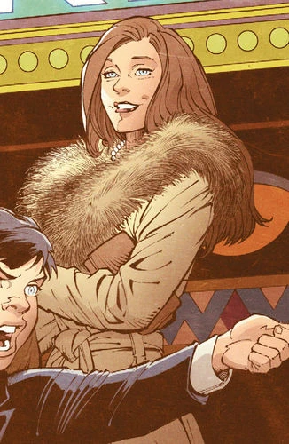

The Dark Knight Returns





Trilogia do Nolan
Quer combater os supervilões de Gotham como o cavaleiro das trevas? Se registre aqui!
Username:
Nome:
Sobrenome:
Email:
Senha:
Faça o seu Login para ganhar acesso as empresas Wayne e escolher os seus equipamentos!
Username:
Senha: